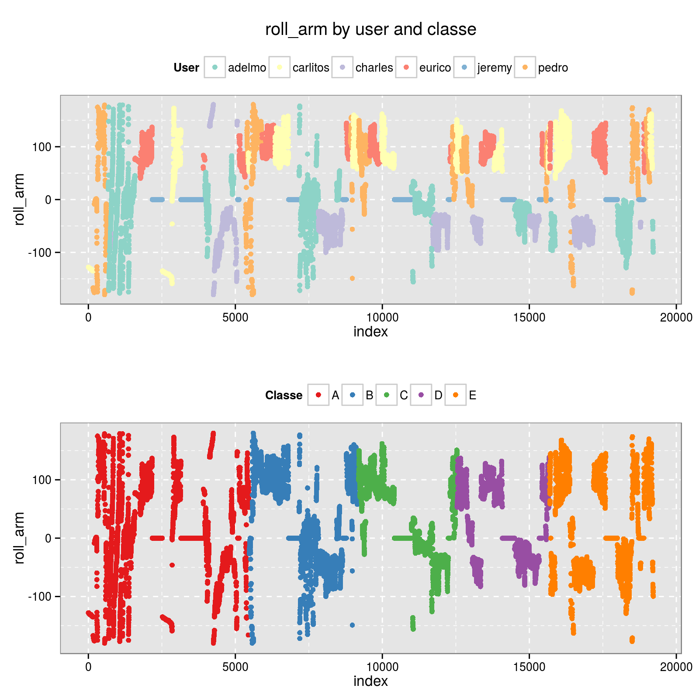
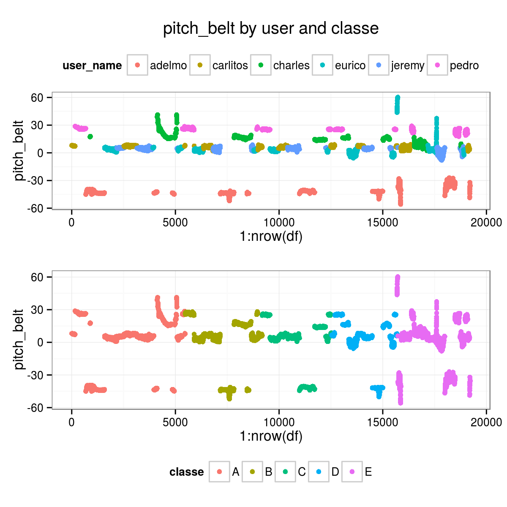
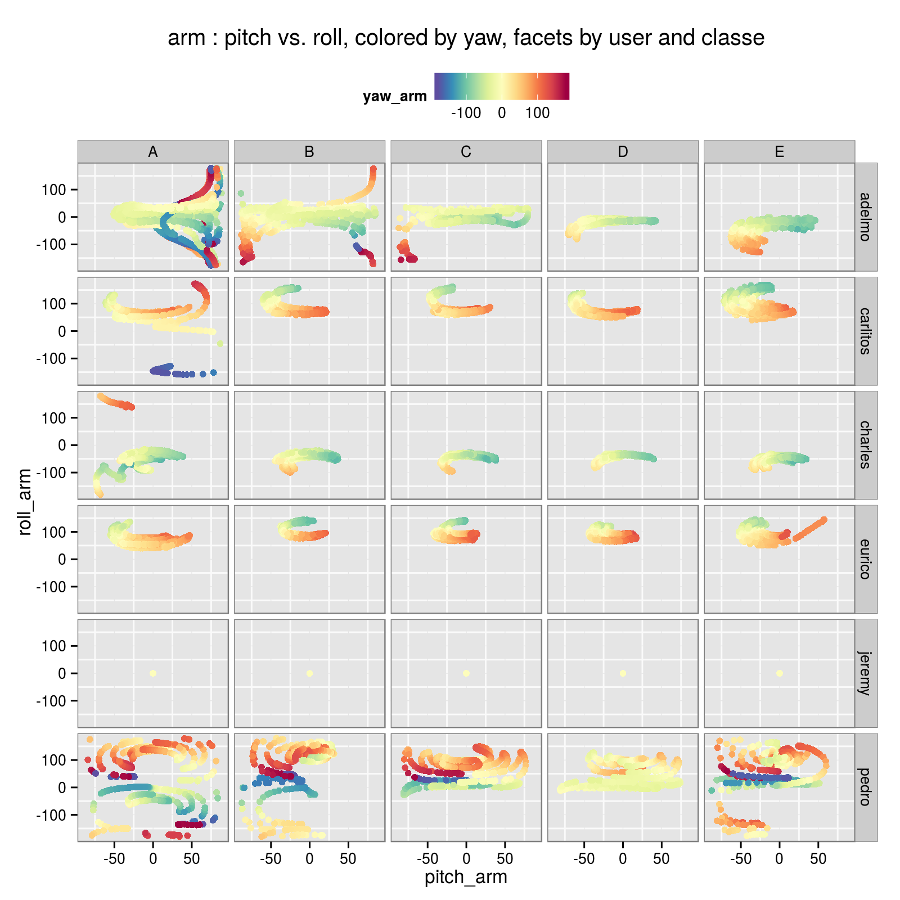
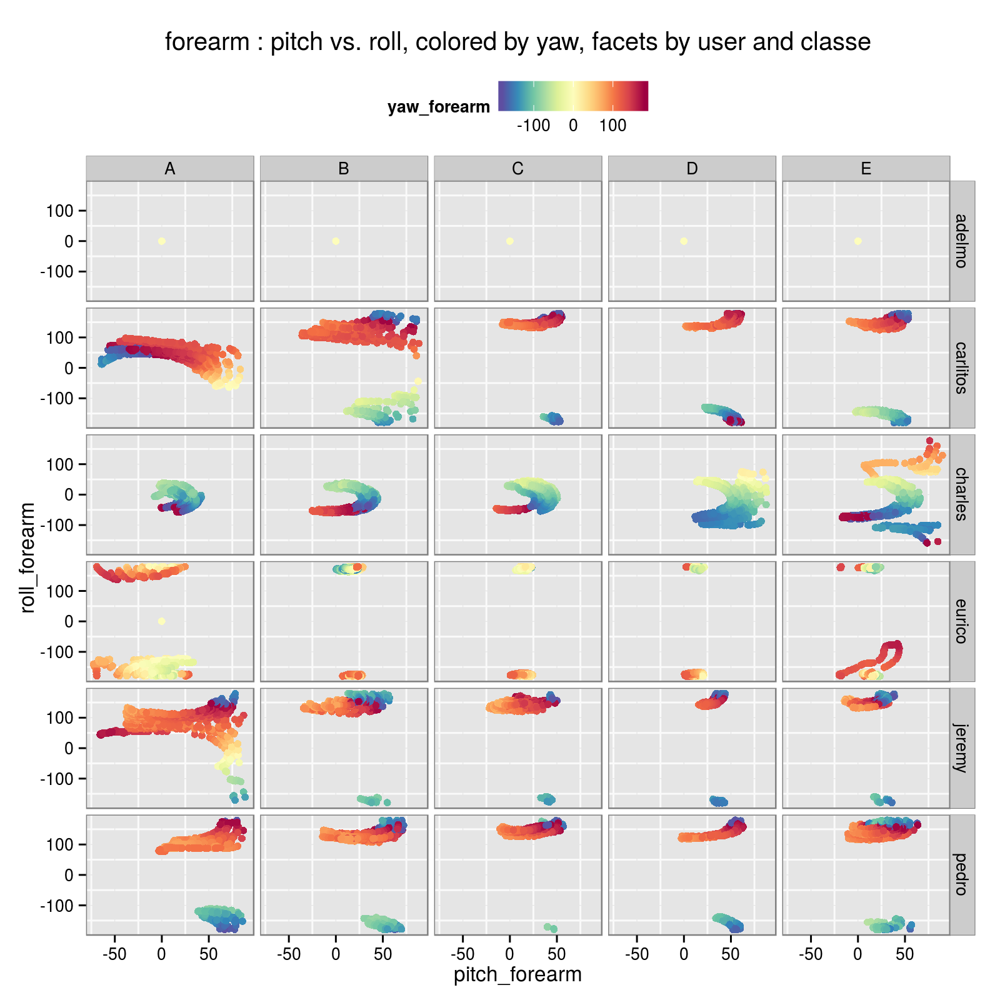

Machine-Learning-based Assessment of The Quality of Weight-lifting Exercises
Giovanni Fossati
PREAMBLE
Report for the first assignment of the Practical Machine Learning course of the Coursera/JHSPH Data Science Specialization.
The source files are posted on GitHub
INTRODUCTION
The rapid diffusion of sensors able to record physical parameters associated with motion (e.g. accelerometers), in dedicated devices and more importantly in general consumer electronics available/used by a broader population has sparked a great interest in developing applications taking advantage of these motion-related data. One area of particular interest concerns fitness-related activities.
This report summarizes the results of the development, and testing, of a Machine Learning model able to recognize the quality of a simple weight lifting exercise, namely whether or not it was performed appropropriately (and hence safely and effectively).
We used the dataset put together by the research group on Human Activity Recognition at the PUC of Rio de Janeiro.
SUMMARY OF RESULTS
We tested three types of ML algorithms, all tree-based methods: CART trees, boosted trees, and random forest.
The first two methods failed to yield high quality results. This may have been caused by less than ideal choice of parameters, although in most cases we run them with the default values from caret, which are expected to be reasonable for decent results.
Random forest models produced high quality results, with accuracies exceeding 99%, both in the built-in Out Of the Bag resampling, and on our separate testing subset.
Beside its clearly better performance, the choice of a random forest as an ensemble method is supported by its ability to handle multi-class problems.
We ran random forest models with three different internal cross-validation setups (implemented through the trainControl() function of caret): * 4-fold Cross-Validation, * bootstrap, and * Leave Group Out Cross Validation.
As noted, the trained models achieved exceptional accuracy in the ability of predicting the outcome variable classe, not only when tested against the 20-entries project benchmark, but more importantly when tested against the portion (25%) of the full dataset that we set aside for __validation_.
The results of a random forest model are not easily interpretable, even in presence of physically/motion based predictors. Nevertheless, as illustrated in some example plots, the data contain fairly clear pattern and differences between categories of exercise quality, that can be related to the slight differences in the motion of the body and weight dumbbell, and that are apparently very well picked out by the algorithm.
Outline
- THE DATA SET
- DATA PREPARATION
- Cleaning/Tidying
- Non-sensor variables
- Individual measurements vs summaries : the
new_windowvariable
- Cleaning/Tidying
- EXPLORATORY ANALYSIS
- Features plotted vs. sequence index, and color coded by
user_nameandclasse - Feature vs. Feature plots with separate panels by
classe - About Feature Selection
- Zero/low Variance Predictors
- Collinearity Between Predictors
- Features plotted vs. sequence index, and color coded by
- DATA SPLITTING: “NEW” TRAINING AND TESTING SUBSETS
- Feature selection on training / testing subsets
- MODELING
- APPENDIX
THE DATA
The data for the project were made available from the Coursera ML course webpage. Two separate sets were posted:
- a training dataset. This set comprises a little over 16,000 entries for 160 variables.
- a testing dataset, to be used as a final project benchmark, comprising 20 “anonymized” entries.
Data files were downloaded and read-in from local copies:
full <- read.csv("./data/pml-training.csv.gz", na.strings=c("#DIV/0!","","NA"), stringsAsFactors=FALSE)
full <- add_new_variables(full)
alt.full <- tidy_df(full)TEST <- read.csv("./data/pml-testing.csv.gz", na.strings=c("#DIV/0!","","NA"), stringsAsFactors=FALSE)
alt.TEST <- tidy_df(TEST)Structure
The dataset comprises 162 variables:
- 152 actual predictors, i.e. the sensor data.
- 1 is the quality class of the exercise (
classe, taking values A, B, C, D, E). - 7 are auxiliary variables:
- the user name (
user_name). - 3 time stamp related variables:
raw_timestamp_part_1,raw_timestamp_part_2,cvtd_timestamp. - 2 exercise window markers/counters:
new_window,num_window.
- the user name (
The Sensor Data
As described in the paper by Velloso et al., four inertial measurement units (IMU) where setup, placed on belt, arm, forearm, dumbbell. Each sensor measured 3-axes acceleration, gyroscope and magnetometer data at high cadence (45 Hz). These data were processed to yield 13 timed variables for each sensor:
- total acceleration.
- roll, pitch, yaw angles.
- x, y, z values for gyroscope, acceleleration, and magnetometer.
For instance, for the belt sensor the basic timed data are: total_accel_belt, roll_belt, pitch_belt, yaw_belt, gyros_belt_x, gyros_belt_y, gyros_belt_z, accel_belt_x, accel_belt_y, accel_belt_z, magnet_belt_x, magnet_belt_y, magnet_belt_z.
The dataset therefore comprises \(4 \times 13 = 52\) basic timed data.
In addition to these, several statistical summaries are computed and reported for each exercise window, for each sensor:
- For
total_accel, its variancevar_accel. - For each of the three angles:
avg,stddev,var,kurtosis,skewness,max,min,amplitude(\(3 \times 8\) variables).
These \(1 + 24 = 25\) statistical summaries for each sensor add another \(100\) variables to the dataset for a total of \(152\) variables.
It is worth emphasizing that the dataset presents timed and summary variables all together in one table. While this may be practically convenient, it makes this dataset un-tidy by combining variables of different nature. Fortunately the two types of variables can be easily separated on the basis of the value of the new_window auxiliary variable, which has value no for entries corresponding to timed data, and yes for their statistical summaries over each exercise window.
DATA PREPARATION
Cleaning/Tidying
Non-sensor variables
Some variables should be discarded because associated with very specific aspects of the experiment that should be irrelevant from the point of view of its goal, such as window flags and time stamps.
These are the excluded variables: X, user_name, new_window, num_window, cvtd_timestamp, raw_timestamp_part_1, raw_timestamp_part_2.
Beside their intrinsic irrelevance, keeping these in would likely strongly drive the results in a completely spurious and meaningless way, because for instance the algorithm may hook on the user_name or num_window.
Individual measurements vs summaries : the new_window variable
To the best of my understanding, the dataset combines two different kinds of observations:
- single measurements of the main observables from the sensors, with some time cadence, and organized in windows, which are numbered (
num_windowvariable).
These data havenew_window == "no". - statistical summaries of the measurements of each main observable over each window.
These data havenew_window == "yes", and
We restricted our analysis to the 52 variables representing individual timed measurements, discarding the summary data.
alt.full <- subset(alt.full, new_window == "no")
alt.full.good <- select_proper_vars(alt.full)
alt.TEST.good <- select_proper_vars(alt.TEST)
alt.user <- alt.full$user_nameWe also filtered out variables with NA, which basically means filtering against the summary variables.
alt.tt <- colSums(is.na(alt.full.good)) == 0
alt.full.select <- alt.full.good[, alt.tt]
alt.TEST.select <- alt.TEST.good[, alt.tt]EXPLORATORY ANALYSIS
Features plotted vs. sequence index, and color coded by user_name and classe
These kind of plots shows that some of the features seem to correlated very strongly with the user, even more than with their classe, somewhat oddly.
This suggest that the training to predict the quality parameter of the weight lifting exercise (classe) that we can achieve with this dataset may not be easily generalized.


Feature vs. Feature Plots with Separate Panels by classe
This second set of example plots shows that there are indeed some reasonably recognizable patterns allowing to distinguish between different classe categories.
The expectation is that the ML algorithm will be able to identify them and build on them a classification scheme.


About Feature Selection
Zero/low Variance Predictors
We checked the dataset for un-informative predictors, namely variables taking (nearly) unique values or having very little variance in their values.
The caret package provides a very convenient function to perform this quality-check, nearZeroVar().
None of the 52 features meets the criteria for exclusion on the basis of near Zero Variance.
The full results of running it on our dataset (nearZeroVar(alt.full.select, saveMetrics=TRUE)) are reported in the Appendix.
Collinearity between predictors
The presence of correlated predictor is undesirable because it can bias/mislead the modeling and in any case it may lead to run a model with an unnecessarily large(r) number of predictors. Although some ML algorithms are not negatively affected, it is generally safe to exclude correlated pr edictors.
For tree-based models it is actually recommended to clean the data set of correlated predictors because they end up sharing their overall importance, thus appearing to be less significant than they actually are.
We took advantage of the caret function findCorrelation() to identify variables whose absolute correlation value exceeds a set threshold (we chose 0.75) and obtain a list of variables to exclude selected among those with high correlation.
The actual predictors filtering was done applying this method just on the training subset (see below).
DATA SPLITTING: “NEW” TRAINING AND TESTING SUBSETS
For validation purposes we split the full dataset in two subsets:
- a training subset, comprising 75% of the data.
- a testing subset, comprising 25% of the data.
This training / testing split should not be confused with the original two datasets, which unfortunately are named also training and testing.
We are splitting the original training large dataset in two to be able to have an independent validation of the models, beyond what may already be done internally by some ML algorithms or by caret wrapped around them (e.g. by bootstrapping, or the built-in randomization and subsetting of random forest methods).
seed.split <- 12468
set.seed(seed.split)
i.train.alt <- createDataPartition(y = alt.full.select$classe, p=0.75, list=FALSE)
alt.training <- alt.full.select[i.train.alt, ]
alt.testing <- alt.full.select[-i.train.alt, ]Feature selection on training / testing subsets
In the spirit of truly preserving the independence of the testing data subset, we performed the correlation-based feature reduction on the basis of the correlation between variables computed on the training subset instead of the full dataset, and applied the same variables filtering to the testing subset.
# correlation filtering done on the training subset
alt.allCorr <- cor(alt.training[, -1])
i.fC.75.alt <- findCorrelation(alt.allCorr, cutoff=0.75)The following plot shows the correlation matrix, with variables ordered on the basis of their clustering.
corrplot(alt.allCorr, order="hclust", method="color",
col=color1(20), cl.length=21, tl.cex=0.8, tl.col="black", mar=c(1,1,1,0))
On the basis of their correlation, with a threshold of 0.75, these are the variables that would be excluded.
# variables to be excluded
colnames(alt.training)[i.fC.75.alt+1]
# [1] "accel_belt_z" "roll_belt" "accel_belt_y" "total_accel_belt"
# [5] "accel_dumbbell_z" "accel_belt_x" "pitch_belt" "magnet_dumbbell_x"
# [9] "accel_dumbbell_y" "magnet_dumbbell_y" "accel_dumbbell_x" "accel_arm_x"
# [13] "accel_arm_z" "magnet_arm_y" "magnet_belt_y" "accel_forearm_y"
# [17] "gyros_arm_y" "gyros_forearm_z" "gyros_forearm_y" "gyros_dumbbell_x"
# variables selection
alt.training.cut75 <- alt.training[, -(i.fC.75.alt+1)]
alt.testing.cut75 <- alt.testing[, -(i.fC.75.alt+1)]MODELING
General Summary
We tested three types of ML algorithms, all within the framework provided by caret, and all generally speaking tree-based models.
- CART trees, namely
rpart2. - boosted tree, namely
gbm. - random forest, namely
rf.
The first two methods failed to yield high quality results, in fact in some cases their performance on the testing subset was very poor.
This may have been caused by less than ideal choice of parameters, but in most cases we let the modeling run with the default values from caret, which are expected to be reasonable for decent results.
We have to acknowledge that in some cases, in particular for the gbm models, the running time turned out to be very long and the memory requirements large enough to make it impractical, and we did not pursue those models more extensively.
On the other hand random forest models produced high quality results, with accuracies exceeding 99%, both in the built-in Out Of the Bag resampling, and on our separate testing subset.
In the next three sections we illustrate the results of random forest models run with three different internal cross-validation setups, implemented through the trainControl() function of caret:
cv: Cross-Validation, 4-fold (i.e. 75%/25% splits).boot(the default): bootstrap, 25 repeats.- ’LGOCV`: Leave Group Out Cross Validation, 25 repeats, 75%/25% train/test splits of the data.
In all cases we also tried a set of values for mtry, which regulates how many predictors are selected in the random forest random subsetting of variables.
Random Forest case 1 : 4-fold CV
With mtry = 2, 6, 10, 18, 26, 34.
mtry.values <- c(2, 6, 10, 18, 26, 34)
ctrl.rf1c <- trainControl(method = "cv", number=4)
seed.rf1c <- 16790; set.seed(seed.rf1c)
mod.alt.rf1c <- train(x = alt.training.cut75[, -1],
y = alt.training.cut75$classe,
method = "rf",
trControl = ctrl.rf1c,
tuneGrid = data.frame(mtry = mtry.values),
importance = TRUE,
proximity = TRUE)Fit Summary
mod.alt.rf1c
# Random Forest
#
# 14414 samples
# 32 predictor
# 5 classes: 'A', 'B', 'C', 'D', 'E'
#
# No pre-processing
# Resampling: Cross-Validated (4 fold)
#
# Summary of sample sizes: 10811, 10810, 10811, 10810
#
# Resampling results across tuning parameters:
#
# mtry Accuracy Kappa Accuracy SD Kappa SD
# 2 0.9898018 0.9870959 0.003951942 0.005002063
# 6 0.9911893 0.9888523 0.002982777 0.003774821
# 10 0.9901487 0.9875353 0.003060048 0.003872692
# 18 0.9879979 0.9848141 0.002999668 0.003797201
# 26 0.9830026 0.9784937 0.003199211 0.004049294
# 34 0.9777993 0.9719118 0.003413927 0.004319903
#
# Accuracy was used to select the optimal model using the largest value.
# The final value used for the model was mtry = 6.
mod.alt.rf1c$finalModel
#
# Call:
# randomForest(x = x, y = y, mtry = param$mtry, importance = TRUE)
# Type of random forest: classification
# Number of trees: 500
# No. of variables tried at each split: 6
#
# OOB estimate of error rate: 0.61%
# Confusion matrix:
# A B C D E class.error
# A 4100 2 0 1 1 0.0009746589
# B 17 2762 10 0 0 0.0096808892
# C 0 19 2484 10 1 0.0119331742
# D 1 0 21 2337 2 0.0101651842
# E 0 0 1 2 2643 0.0011337868
mod.alt.rf1c$results
# mtry Accuracy Kappa AccuracySD KappaSD
# 1 2 0.9898018 0.9870959 0.003951942 0.005002063
# 2 6 0.9911893 0.9888523 0.002982777 0.003774821
# 3 10 0.9901487 0.9875353 0.003060048 0.003872692
# 4 18 0.9879979 0.9848141 0.002999668 0.003797201
# 5 26 0.9830026 0.9784937 0.003199211 0.004049294
# 6 34 0.9777993 0.9719118 0.003413927 0.004319903Predictions on testing subset
pred.rf1c.test75 <- predict(mod.alt.rf1c, alt.testing.cut75, type="raw")
confusionMatrix(alt.testing.cut75$classe, pred.rf1c.test75)
# Confusion Matrix and Statistics
#
# Reference
# Prediction A B C D E
# A 1364 3 0 0 0
# B 0 919 7 0 3
# C 0 6 824 8 0
# D 0 0 12 772 2
# E 0 0 0 1 881
#
# Overall Statistics
#
# Accuracy : 0.9913
# 95% CI : (0.9882, 0.9937)
# No Information Rate : 0.284
# P-Value [Acc > NIR] : < 2.2e-16
#
# Kappa : 0.9889
# Mcnemar's Test P-Value : NA
#
# Statistics by Class:
#
# Class: A Class: B Class: C Class: D Class: E
# Sensitivity 1.0000 0.9903 0.9775 0.9885 0.9944
# Specificity 0.9991 0.9974 0.9965 0.9965 0.9997
# Pos Pred Value 0.9978 0.9892 0.9833 0.9822 0.9989
# Neg Pred Value 1.0000 0.9977 0.9952 0.9978 0.9987
# Prevalence 0.2840 0.1933 0.1756 0.1626 0.1845
# Detection Rate 0.2840 0.1914 0.1716 0.1608 0.1835
# Detection Prevalence 0.2847 0.1935 0.1745 0.1637 0.1837
# Balanced Accuracy 0.9996 0.9939 0.9870 0.9925 0.9971Predictions on TEST subset (the 20 benchmark values for the Project)
pred.rf1c.TEST <- predict(mod.alt.rf1c, alt.TEST.select, type="raw")
# comparison with "truth"
pred.rf1c.TEST == answers
# [1] TRUE TRUE TRUE TRUE TRUE TRUE TRUE TRUE TRUE TRUE TRUE TRUE TRUE TRUE TRUE TRUE TRUE TRUE TRUE
# [20] TRUEVariable Importance
varImp(mod.alt.rf1c, useModel=TRUE, scale=FALSE)
# rf variable importance
#
# variables are sorted by maximum importance across the classes
# only 20 most important variables shown (out of 32)
#
# A B C D E
# yaw_belt 71.79 61.70 57.89 69.75 48.77
# magnet_dumbbell_z 62.44 51.77 64.25 48.18 52.06
# roll_dumbbell 36.91 46.06 61.96 48.89 43.28
# magnet_belt_z 41.24 48.77 45.69 58.38 54.41
# pitch_forearm 40.67 44.10 46.50 45.32 45.93
# gyros_belt_z 35.62 43.83 37.73 44.62 46.31
# roll_arm 28.81 44.13 37.71 46.26 33.29
# roll_forearm 34.88 33.01 43.97 31.74 31.56
# yaw_dumbbell 28.42 37.38 42.15 36.77 40.56
# gyros_dumbbell_y 28.61 32.51 40.28 33.23 27.26
# total_accel_dumbbell 31.76 35.98 34.25 33.40 39.88
# magnet_forearm_z 32.86 38.47 31.33 37.96 35.49
# yaw_arm 33.32 38.15 32.36 36.99 31.97
# gyros_arm_x 20.95 36.79 29.31 34.78 29.26
# magnet_belt_x 23.13 36.25 36.77 29.33 36.31
# accel_forearm_x 21.83 31.82 32.37 36.20 29.57
# pitch_arm 24.37 35.54 28.17 30.00 24.60
# accel_forearm_z 22.17 29.58 34.86 29.02 30.99
# magnet_arm_z 28.60 33.79 29.99 31.12 28.58
# accel_arm_y 23.60 32.74 29.25 29.51 27.12# plot(varImp(mod.alt.rf1c, useModel=TRUE, scale=FALSE), top=ncol(mod.alt.rf1c$trainingData)-1)
dotPlot(varImp(mod.alt.rf1c, useModel=TRUE, scale=FALSE), top=ncol(mod.alt.rf1c$trainingData)-1)
Random Forest case 2 : bootstrap, 25 reps
With mtry = 2, 6, 10, 18, 26, 34
mtry.values <- c(2, 6, 10, 18, 26, 34)
seed.rf1b <- 16789; set.seed(seed.rf1b)
mod.rf1b <- train(x = training.cut75[, -1],
y = training.cut75$classe,
method = "rf",
tuneGrid = data.frame(mtry = mtry.values))Fit Summary
mod.rf1b
# Random Forest
#
# 14718 samples
# 34 predictor
# 5 classes: 'A', 'B', 'C', 'D', 'E'
#
# No pre-processing
# Resampling: Bootstrapped (25 reps)
#
# Summary of sample sizes: 14718, 14718, 14718, 14718, 14718, 14718, ...
#
# Resampling results across tuning parameters:
#
# mtry Accuracy Kappa Accuracy SD Kappa SD
# 2 0.9880161 0.9848382 0.002011458 0.002541064
# 6 0.9892243 0.9863680 0.001674175 0.002113586
# 10 0.9887082 0.9857150 0.001479500 0.001868168
# 18 0.9866414 0.9831000 0.001855994 0.002343789
# 26 0.9835928 0.9792425 0.002145057 0.002708918
# 34 0.9768211 0.9706757 0.002932730 0.003698371
#
# Accuracy was used to select the optimal model using the largest value.
# The final value used for the model was mtry = 6.
mod.rf1b$finalModel
#
# Call:
# randomForest(x = x, y = y, mtry = param$mtry)
# Type of random forest: classification
# Number of trees: 500
# No. of variables tried at each split: 6
#
# OOB estimate of error rate: 0.64%
# Confusion matrix:
# A B C D E class.error
# A 4182 3 0 0 0 0.0007168459
# B 13 2826 8 0 1 0.0077247191
# C 0 19 2530 17 1 0.0144137125
# D 0 0 21 2387 4 0.0103648425
# E 0 0 2 5 2699 0.0025868441
mod.rf1b$results
# mtry Accuracy Kappa AccuracySD KappaSD
# 1 2 0.9880161 0.9848382 0.002011458 0.002541064
# 2 6 0.9892243 0.9863680 0.001674175 0.002113586
# 3 10 0.9887082 0.9857150 0.001479500 0.001868168
# 4 18 0.9866414 0.9831000 0.001855994 0.002343789
# 5 26 0.9835928 0.9792425 0.002145057 0.002708918
# 6 34 0.9768211 0.9706757 0.002932730 0.003698371Predictions on testing subset
pred.rf1b.test75 <- predict(mod.rf1b, testing.cut75, type="raw")
confusionMatrix(testing.cut75$classe, pred.rf1b.test75)
# Confusion Matrix and Statistics
#
# Reference
# Prediction A B C D E
# A 1393 1 0 0 1
# B 7 936 4 0 2
# C 0 5 845 4 1
# D 0 0 5 799 0
# E 0 0 0 3 898
#
# Overall Statistics
#
# Accuracy : 0.9933
# 95% CI : (0.9906, 0.9954)
# No Information Rate : 0.2855
# P-Value [Acc > NIR] : < 2.2e-16
#
# Kappa : 0.9915
# Mcnemar's Test P-Value : NA
#
# Statistics by Class:
#
# Class: A Class: B Class: C Class: D Class: E
# Sensitivity 0.9950 0.9936 0.9895 0.9913 0.9956
# Specificity 0.9994 0.9967 0.9975 0.9988 0.9993
# Pos Pred Value 0.9986 0.9863 0.9883 0.9938 0.9967
# Neg Pred Value 0.9980 0.9985 0.9978 0.9983 0.9990
# Prevalence 0.2855 0.1921 0.1741 0.1644 0.1839
# Detection Rate 0.2841 0.1909 0.1723 0.1629 0.1831
# Detection Prevalence 0.2845 0.1935 0.1743 0.1639 0.1837
# Balanced Accuracy 0.9972 0.9952 0.9935 0.9950 0.9974Predictions on TEST subset (the 20 benchmark values for the Project)
pred.rf1b.TEST <- predict(mod.rf1b, TEST.select, type="raw")
# comparison with "truth"
pred.rf1b.TEST == answers
# [1] TRUE TRUE TRUE TRUE TRUE TRUE TRUE TRUE TRUE TRUE TRUE TRUE TRUE TRUE TRUE TRUE TRUE TRUE TRUE
# [20] TRUEVariable Importance
varImp(mod.rf1b, useModel=TRUE, scale=FALSE)
# rf variable importance
#
# only 20 most important variables shown (out of 34)
#
# Overall
# yaw_belt 1155.1
# magnet_dumbbell_z 806.5
# pitch_forearm 762.5
# magnet_belt_z 698.2
# roll_forearm 625.6
# roll_dumbbell 573.8
# gyros_belt_z 498.8
# roll_arm 414.8
# total_accel_dumbbell 391.4
# gyros_dumbbell_y 377.9
# yaw_dumbbell 377.1
# magnet_forearm_z 342.3
# accel_forearm_x 333.3
# magnet_arm_x 327.5
# accel_forearm_z 320.5
# pitch_dumbbell 306.6
# magnet_belt_x 306.5
# yaw_arm 284.8
# magnet_forearm_y 271.6
# magnet_forearm_x 235.4# plot(varImp(mod.rf1b, useModel=TRUE, scale=FALSE), top=ncol(mod.rf1b$trainingData)-1)
dotPlot(varImp(mod.rf1b, useModel=TRUE, scale=FALSE), top=ncol(mod.rf1b$trainingData)-1)
Random Forest case 3 : LGOCV, 25 repeats, 75%/25% splits
With mtry = 2, 4, 6, 8, 10.
mtryValues <- c(2, 4, 6, 8, 10)
ctrl <- trainControl(method = "LGOCV",
classProbs = TRUE)
seed.rf1e <- 17891; set.seed(seed.rf1e)
mod.alt.rf1e <- train(x = alt.training.cut75[, -1],
y = alt.training.cut75$classe,
method = "rf",
tuneGrid = data.frame(mtry=mtryValues),
trControl = ctrl,
importance = TRUE,
proximity = TRUE)Fit Summary
mod.alt.rf1e
# Random Forest
#
# 14414 samples
# 32 predictor
# 5 classes: 'A', 'B', 'C', 'D', 'E'
#
# No pre-processing
# Resampling: Repeated Train/Test Splits Estimated (25 reps, 0.75%)
#
# Summary of sample sizes: 10812, 10812, 10812, 10812, 10812, 10812, ...
#
# Resampling results across tuning parameters:
#
# mtry Accuracy Kappa Accuracy SD Kappa SD
# 2 0.9896724 0.9869327 0.001744837 0.002208660
# 4 0.9910383 0.9886615 0.001203534 0.001523144
# 6 0.9910272 0.9886476 0.001361771 0.001723509
# 8 0.9907052 0.9882400 0.001660179 0.002101095
# 10 0.9903054 0.9877342 0.001701827 0.002153699
#
# Accuracy was used to select the optimal model using the largest value.
# The final value used for the model was mtry = 4.
mod.alt.rf1e$finalModel
#
# Call:
# randomForest(x = x, y = y, mtry = param$mtry, importance = TRUE)
# Type of random forest: classification
# Number of trees: 500
# No. of variables tried at each split: 4
#
# OOB estimate of error rate: 0.65%
# Confusion matrix:
# A B C D E class.error
# A 4101 1 0 1 1 0.0007309942
# B 18 2764 7 0 0 0.0089637863
# C 0 19 2483 12 0 0.0123309467
# D 0 0 28 2330 3 0.0131300296
# E 0 0 1 3 2642 0.0015117158
mod.alt.rf1e$results
# mtry Accuracy Kappa AccuracySD KappaSD
# 1 2 0.9896724 0.9869327 0.001744837 0.002208660
# 2 4 0.9910383 0.9886615 0.001203534 0.001523144
# 3 6 0.9910272 0.9886476 0.001361771 0.001723509
# 4 8 0.9907052 0.9882400 0.001660179 0.002101095
# 5 10 0.9903054 0.9877342 0.001701827 0.002153699Predictions on testing subset
pred.rf1e.test75 <- predict(mod.alt.rf1e, alt.testing.cut75, type="raw")
confusionMatrix(alt.testing.cut75$classe, pred.rf1e.test75)
# Confusion Matrix and Statistics
#
# Reference
# Prediction A B C D E
# A 1365 2 0 0 0
# B 0 920 6 0 3
# C 0 8 823 7 0
# D 0 0 12 771 3
# E 0 0 0 1 881
#
# Overall Statistics
#
# Accuracy : 0.9913
# 95% CI : (0.9882, 0.9937)
# No Information Rate : 0.2843
# P-Value [Acc > NIR] : < 2.2e-16
#
# Kappa : 0.9889
# Mcnemar's Test P-Value : NA
#
# Statistics by Class:
#
# Class: A Class: B Class: C Class: D Class: E
# Sensitivity 1.0000 0.9892 0.9786 0.9897 0.9932
# Specificity 0.9994 0.9977 0.9962 0.9963 0.9997
# Pos Pred Value 0.9985 0.9903 0.9821 0.9809 0.9989
# Neg Pred Value 1.0000 0.9974 0.9955 0.9980 0.9985
# Prevalence 0.2843 0.1937 0.1751 0.1622 0.1847
# Detection Rate 0.2843 0.1916 0.1714 0.1606 0.1835
# Detection Prevalence 0.2847 0.1935 0.1745 0.1637 0.1837
# Balanced Accuracy 0.9997 0.9935 0.9874 0.9930 0.9965Predictions on TEST subset (the 20 benchmark values for the Project)
pred.rf1e.TEST <- predict(mod.alt.rf1e, alt.TEST.select, type="raw")
# comparison with "truth"
pred.rf1e.TEST == answers
# [1] TRUE TRUE TRUE TRUE TRUE TRUE TRUE TRUE TRUE TRUE TRUE TRUE TRUE TRUE TRUE TRUE TRUE TRUE TRUE
# [20] TRUE
APPENDIX
Timed vs. summary data entries
alt.statsNA <- as.data.frame(t(sapply(alt.full.good, function(x){ c(good = sum(!is.na(x)), bad = sum(is.na(x)))})))
print(alt.statsNA, quote=FALSE, print.gap=5)
# good bad
# classe 19216 0
# total_accel_belt 19216 0
# var_accel_belt 0 19216
# roll_belt 19216 0
# avg_roll_belt 0 19216
# stddev_roll_belt 0 19216
# var_roll_belt 0 19216
# kurtosis_roll_belt 0 19216
# skewness_roll_belt 0 19216
# min_roll_belt 0 19216
# max_roll_belt 0 19216
# amplitude_roll_belt 0 19216
# pitch_belt 19216 0
# avg_pitch_belt 0 19216
# stddev_pitch_belt 0 19216
# var_pitch_belt 0 19216
# kurtosis_pitch_belt 0 19216
# skewness_pitch_belt 0 19216
# min_pitch_belt 0 19216
# max_pitch_belt 0 19216
# amplitude_pitch_belt 0 19216
# yaw_belt 19216 0
# avg_yaw_belt 0 19216
# stddev_yaw_belt 0 19216
# var_yaw_belt 0 19216
# kurtosis_yaw_belt 0 19216
# skewness_yaw_belt 0 19216
# min_yaw_belt 0 19216
# max_yaw_belt 0 19216
# amplitude_yaw_belt 0 19216
# gyros_belt_x 19216 0
# gyros_belt_y 19216 0
# gyros_belt_z 19216 0
# accel_belt_x 19216 0
# accel_belt_y 19216 0
# accel_belt_z 19216 0
# magnet_belt_x 19216 0
# magnet_belt_y 19216 0
# magnet_belt_z 19216 0
# total_accel_arm 19216 0
# var_accel_arm 0 19216
# roll_arm 19216 0
# avg_roll_arm 0 19216
# stddev_roll_arm 0 19216
# var_roll_arm 0 19216
# kurtosis_roll_arm 0 19216
# skewness_roll_arm 0 19216
# min_roll_arm 0 19216
# max_roll_arm 0 19216
# amplitude_roll_arm 0 19216
# pitch_arm 19216 0
# avg_pitch_arm 0 19216
# stddev_pitch_arm 0 19216
# var_pitch_arm 0 19216
# kurtosis_pitch_arm 0 19216
# skewness_pitch_arm 0 19216
# min_pitch_arm 0 19216
# max_pitch_arm 0 19216
# amplitude_pitch_arm 0 19216
# yaw_arm 19216 0
# avg_yaw_arm 0 19216
# stddev_yaw_arm 0 19216
# var_yaw_arm 0 19216
# kurtosis_yaw_arm 0 19216
# skewness_yaw_arm 0 19216
# min_yaw_arm 0 19216
# max_yaw_arm 0 19216
# amplitude_yaw_arm 0 19216
# gyros_arm_x 19216 0
# gyros_arm_y 19216 0
# gyros_arm_z 19216 0
# accel_arm_x 19216 0
# accel_arm_y 19216 0
# accel_arm_z 19216 0
# magnet_arm_x 19216 0
# magnet_arm_y 19216 0
# magnet_arm_z 19216 0
# total_accel_forearm 19216 0
# var_accel_forearm 0 19216
# roll_forearm 19216 0
# avg_roll_forearm 0 19216
# stddev_roll_forearm 0 19216
# var_roll_forearm 0 19216
# kurtosis_roll_forearm 0 19216
# skewness_roll_forearm 0 19216
# min_roll_forearm 0 19216
# max_roll_forearm 0 19216
# amplitude_roll_forearm 0 19216
# pitch_forearm 19216 0
# avg_pitch_forearm 0 19216
# stddev_pitch_forearm 0 19216
# var_pitch_forearm 0 19216
# kurtosis_pitch_forearm 0 19216
# skewness_pitch_forearm 0 19216
# min_pitch_forearm 0 19216
# max_pitch_forearm 0 19216
# amplitude_pitch_forearm 0 19216
# yaw_forearm 19216 0
# avg_yaw_forearm 0 19216
# stddev_yaw_forearm 0 19216
# var_yaw_forearm 0 19216
# kurtosis_yaw_forearm 0 19216
# skewness_yaw_forearm 0 19216
# min_yaw_forearm 0 19216
# max_yaw_forearm 0 19216
# amplitude_yaw_forearm 0 19216
# gyros_forearm_x 19216 0
# gyros_forearm_y 19216 0
# gyros_forearm_z 19216 0
# accel_forearm_x 19216 0
# accel_forearm_y 19216 0
# accel_forearm_z 19216 0
# magnet_forearm_x 19216 0
# magnet_forearm_y 19216 0
# magnet_forearm_z 19216 0
# total_accel_dumbbell 19216 0
# var_accel_dumbbell 0 19216
# roll_dumbbell 19216 0
# avg_roll_dumbbell 0 19216
# stddev_roll_dumbbell 0 19216
# var_roll_dumbbell 0 19216
# kurtosis_roll_dumbbell 0 19216
# skewness_roll_dumbbell 0 19216
# min_roll_dumbbell 0 19216
# max_roll_dumbbell 0 19216
# amplitude_roll_dumbbell 0 19216
# pitch_dumbbell 19216 0
# avg_pitch_dumbbell 0 19216
# stddev_pitch_dumbbell 0 19216
# var_pitch_dumbbell 0 19216
# kurtosis_pitch_dumbbell 0 19216
# skewness_pitch_dumbbell 0 19216
# min_pitch_dumbbell 0 19216
# max_pitch_dumbbell 0 19216
# amplitude_pitch_dumbbell 0 19216
# yaw_dumbbell 19216 0
# avg_yaw_dumbbell 0 19216
# stddev_yaw_dumbbell 0 19216
# var_yaw_dumbbell 0 19216
# kurtosis_yaw_dumbbell 0 19216
# skewness_yaw_dumbbell 0 19216
# min_yaw_dumbbell 0 19216
# max_yaw_dumbbell 0 19216
# amplitude_yaw_dumbbell 0 19216
# gyros_dumbbell_x 19216 0
# gyros_dumbbell_y 19216 0
# gyros_dumbbell_z 19216 0
# accel_dumbbell_x 19216 0
# accel_dumbbell_y 19216 0
# accel_dumbbell_z 19216 0
# magnet_dumbbell_x 19216 0
# magnet_dumbbell_y 19216 0
# magnet_dumbbell_z 19216 0Checking for zero/low variance predictors.
nzv <- nearZeroVar(alt.full.select, saveMetrics=TRUE)
nzv
# freqRatio percentUnique zeroVar nzv
# classe 1.471490 0.02601998 FALSE FALSE
# total_accel_belt 1.069434 0.15091590 FALSE FALSE
# roll_belt 1.086168 6.83805162 FALSE FALSE
# pitch_belt 1.036649 9.53892590 FALSE FALSE
# yaw_belt 1.047244 10.10616153 FALSE FALSE
# gyros_belt_x 1.050784 0.72335554 FALSE FALSE
# gyros_belt_y 1.148947 0.35907577 FALSE FALSE
# gyros_belt_z 1.071098 0.87947544 FALSE FALSE
# accel_belt_x 1.059367 0.85345545 FALSE FALSE
# accel_belt_y 1.115333 0.74417152 FALSE FALSE
# accel_belt_z 1.080702 1.55599500 FALSE FALSE
# magnet_belt_x 1.089080 1.70170691 FALSE FALSE
# magnet_belt_y 1.096519 1.55079101 FALSE FALSE
# magnet_belt_z 1.019481 2.37302248 FALSE FALSE
# total_accel_arm 1.020316 0.34346378 FALSE FALSE
# roll_arm 51.153846 13.75936719 FALSE FALSE
# pitch_arm 85.282051 15.96065779 FALSE FALSE
# yaw_arm 32.281553 14.89904246 FALSE FALSE
# gyros_arm_x 1.023715 3.34616986 FALSE FALSE
# gyros_arm_y 1.450593 1.95149875 FALSE FALSE
# gyros_arm_z 1.118908 1.29059117 FALSE FALSE
# accel_arm_x 1.017751 4.04350541 FALSE FALSE
# accel_arm_y 1.169082 2.78413822 FALSE FALSE
# accel_arm_z 1.139344 4.12156536 FALSE FALSE
# magnet_arm_x 1.011765 6.96294754 FALSE FALSE
# magnet_arm_y 1.045455 4.53268110 FALSE FALSE
# magnet_arm_z 1.027778 6.57785179 FALSE FALSE
# total_accel_forearm 1.132729 0.36427977 FALSE FALSE
# roll_forearm 11.726154 11.23542881 FALSE FALSE
# pitch_forearm 64.576271 15.09679434 FALSE FALSE
# yaw_forearm 15.236000 10.29870941 FALSE FALSE
# gyros_forearm_x 1.050193 1.54558701 FALSE FALSE
# gyros_forearm_y 1.043011 3.84054954 FALSE FALSE
# gyros_forearm_z 1.112051 1.58201499 FALSE FALSE
# accel_forearm_x 1.142857 4.13197336 FALSE FALSE
# accel_forearm_y 1.050000 5.20920067 FALSE FALSE
# accel_forearm_z 1.019231 3.01311407 FALSE FALSE
# magnet_forearm_x 1.012658 7.92568693 FALSE FALSE
# magnet_forearm_y 1.256410 9.72626978 FALSE FALSE
# magnet_forearm_z 1.017544 8.75832639 FALSE FALSE
# total_accel_dumbbell 1.081020 0.22377186 FALSE FALSE
# roll_dumbbell 1.037879 84.17464613 FALSE FALSE
# pitch_dumbbell 2.248175 81.73397169 FALSE FALSE
# yaw_dumbbell 1.132231 83.34721066 FALSE FALSE
# gyros_dumbbell_x 1.010050 1.25416320 FALSE FALSE
# gyros_dumbbell_y 1.270979 1.44150708 FALSE FALSE
# gyros_dumbbell_z 1.052632 1.06681932 FALSE FALSE
# accel_dumbbell_x 1.006061 2.21169858 FALSE FALSE
# accel_dumbbell_y 1.062500 2.41985845 FALSE FALSE
# accel_dumbbell_z 1.150215 2.12323064 FALSE FALSE
# magnet_dumbbell_x 1.093567 5.84929226 FALSE FALSE
# magnet_dumbbell_y 1.188571 4.38176520 FALSE FALSE
# magnet_dumbbell_z 1.026596 3.51269775 FALSE FALSESome handy functions
Additional locally defined functions, sourced from the external file.
tidy_df <- function( data ) {
for(i in 8:159) {
data[,i] <- as.numeric(data[,i])
}
colnames(data) <- gsub("_picth", "_pitch", colnames(data), perl=TRUE)
colnames(data) <- gsub("var_total_accel_", "var_accel_", colnames(data), perl=TRUE)
colnames(data) <- gsub("roll_belt.1", "pitch_belt", colnames(data), perl=TRUE)
return(data)
}
add_new_variables <- function( data ) {
data$classe <- as.factor(data$classe)
data$timestamp <- data$raw_timestamp_part_1 + data$raw_timestamp_part_2
data$date <- strptime(as.character(data$cvtd_timestamp), "%d/%m/%Y %H:%M")
return(data)
}
select_proper_vars <- function( data ) {
vec0 <- c("total_accel", "var_accel")
nn1 <- c("avg", "stddev", "var", "kurtosis", "skewness", "min", "max", "amplitude")
vec1 <- c("roll", paste(nn1, "roll", sep="_"),
"pitch", paste(nn1, "pitch", sep="_"),
"yaw", paste(nn1, "yaw", sep="_"))
nn2 <- c("gyros", "accel", "magnet")
vec2 <- paste( rep(nn2, each=3), "VVV", c("x","y","z"), sep="_")
vec.VVV <- c(paste(c("total_accel", "var_accel", vec1), "VVV", sep="_"), vec2)
vec.belt <- gsub("_VVV", "_belt", vec.VVV, perl=TRUE)
vec.arm <- gsub("_VVV", "_arm", vec.VVV, perl=TRUE)
vec.forearm <- gsub("_VVV", "_forearm", vec.VVV, perl=TRUE)
vec.dumbbell <- gsub("_VVV", "_dumbbell", vec.VVV, perl=TRUE)
i.classe <- which( colnames(data) == "classe")
if( length(i.classe) > 0 ) {
select <- data[, c("classe", vec.belt, vec.arm, vec.forearm, vec.dumbbell)]
} else {
select <- data[, c("problem_id", vec.belt, vec.arm, vec.forearm, vec.dumbbell)]
}
return(select)
}
# define color palettes
color1 <- colorRampPalette(c("#7F0000", "red", "#FF7F00", "yellow", "white",
"cyan", "#007FFF", "blue", "#00007F"))
color2 <- colorRampPalette(c("#67001F", "#B2182B", "#D6604D", "#F4A582", "#FDDBC7",
"#FFFFFF", "#D1E5F0", "#92C5DE", "#4393C3", "#2166AC", "#053061"))
color3 <- colorRampPalette(c("red", "white", "blue"))
# correct answers
answers <- c("B", "A", "B", "A", "A", "E", "D", "B", "A", "A",
"B", "C", "B", "A", "E", "E", "A", "B", "B", "B")R Session Info
sessionInfo()
# R version 3.1.3 (2015-03-09)
# Platform: x86_64-pc-linux-gnu (64-bit)
# Running under: Ubuntu 14.04.2 LTS
#
# locale:
# [1] LC_CTYPE=en_US.UTF-8 LC_NUMERIC=C LC_TIME=en_US.UTF-8
# [4] LC_COLLATE=C LC_MONETARY=en_US.UTF-8 LC_MESSAGES=en_US.UTF-8
# [7] LC_PAPER=en_US.UTF-8 LC_NAME=C LC_ADDRESS=C
# [10] LC_TELEPHONE=C LC_MEASUREMENT=en_US.UTF-8 LC_IDENTIFICATION=C
#
# attached base packages:
# [1] parallel splines grid stats graphics grDevices utils datasets methods
# [10] base
#
# other attached packages:
# [1] pROC_1.8 rpart_4.1-9 gbm_2.1.1 survival_2.38-1
# [5] partykit_1.0-1 randomForest_4.6-10 caret_6.0-47 lattice_0.20-31
# [9] rattle_3.4.1 corrplot_0.73 gridExtra_0.9.1 gtable_0.1.2
# [13] ggplot2_1.0.1 plyr_1.8.3 knitr_1.10.5
#
# loaded via a namespace (and not attached):
# [1] BradleyTerry2_1.0-6 MASS_7.3-41 Matrix_1.2-0 Rcpp_0.11.6
# [5] SparseM_1.6 brglm_0.5-9 car_2.0-25 class_7.3-12
# [9] codetools_0.2-11 colorspace_1.2-6 digest_0.6.8 e1071_1.6-4
# [13] evaluate_0.7 foreach_1.4.2 formatR_1.2 gtools_3.4.2
# [17] htmltools_0.2.6 iterators_1.0.7 labeling_0.3 lme4_1.1-8
# [21] magrittr_1.5 mgcv_1.8-6 minqa_1.2.4 munsell_0.4.2
# [25] nlme_3.1-120 nloptr_1.0.4 nnet_7.3-9 pbkrtest_0.4-2
# [29] proto_0.3-10 quantreg_5.11 reshape2_1.4.1 rmarkdown_0.7
# [33] scales_0.2.4 stringi_0.5-5 stringr_1.0.0 tools_3.1.3
# [37] yaml_2.1.13